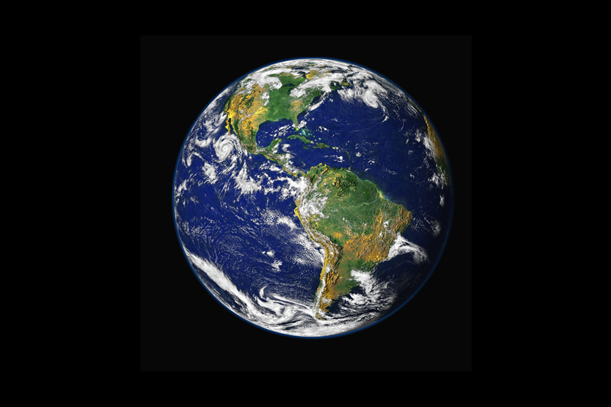

Jorden, den femte største av planetene i vårt solsystem og den tredje planet regnet fra Solen.
Planeten har tilnærmet form som en kule. Den går rundt Solen i en ellipseformet bane
(eksentrisitet 0,0167) med en midlere hastighet på 29,8 km/s og
og bruker et siderisk år (365,2564 døgn) på et omløp.
